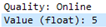
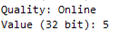
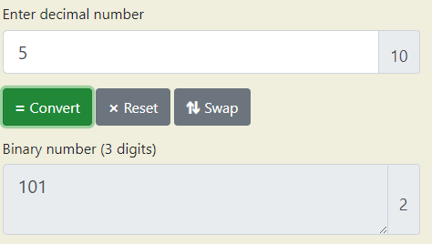
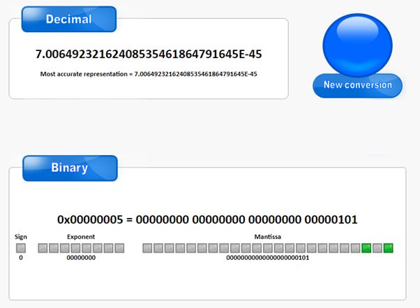
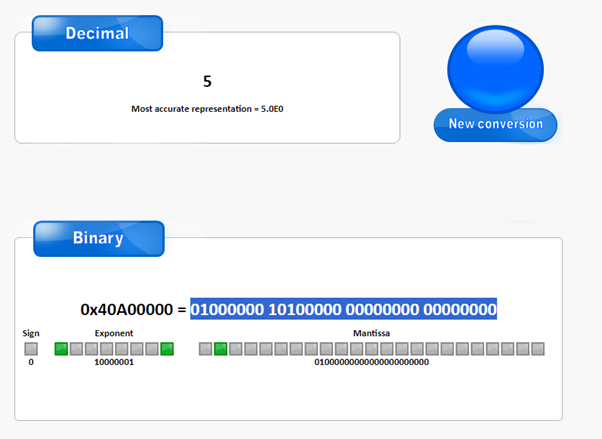
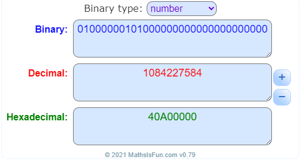

Data Types Matter
Integrity error : datatype mismatch
29/09/2023
This is a tale of distress, suffering, and great revelation. Once upon a time I was simulating DNP3 signals in an attempt to turn an alarm on and off. These alarms were driven by analogue values - one value would set the alarm on, and other value would set it off e.g. 4 might turn the alarm on, any other value would turn it off. You might be asking, “why aren’t these using digital signals (e.g. on/off)?”, or “why isn’t the number to turn it on just 1, rather than 4 or 7 or 5?”. While most alarms are digital, thanks to new standards for programming SCADA at substations, we are moving into the world of analogue alarms. Why? No idea.
The Problem
This is a tale of distress, suffering, and great revelation. Once upon a time I was simulating DNP3 signals in an attempt to turn an alarm on and off. These alarms were driven by analogue values - one value would set the alarm on, and other value would set it off e.g. 4 might turn the alarm on, any other value would turn it off. You might be asking, “why aren’t these using digital signals (e.g. on/off)?”, or “why isn’t the number to turn it on just 1, rather than 4 or 7 or 5?”. While most alarms are digital, thanks to new standards for programming SCADA at substations, we are moving into the world of analogue alarms. Why? No idea.
Further Analysis
I had to dig deeper. I pulled up a DNP3 monitor to watch the signal I was sending travel across but, frankly, couldn’t understand most of the hex that made up the message. It was time to bring out the big guns - WireShark. I loaded up WireShark on the box that was sending out the SCADA signals and watched the DNP3 traffic flow. DNP3 travels in plain text so reading it using WireShark is a total breeze, WireShark even supports it out of the box! Here is what it looked like when I sent a value to an analogue component that worked as expected:

But when sending a value to an analogue alarm, I saw this:

Notice this isn’t a float - this could well be the root of our issue!
Revelation and Solution
The alarm inside the DMS expected a float. The SCADA simulator sent an int. The SCADA simulator had no way of speaking to the DMS to know what type of data it wanted, it was just guessing. Once the int was translated to binary, the alarm read the binary like a float and got a totally different value.


If I took a value (5), converted it to float binary, and then back into an integer, I got 1084227584. A slightly large digit. If I took that big long int and stuck that into the SCADA simulator, low and behold, we had alarm bells ringing!


I created a python script tool that would take in a float, convert it to binary and then read it back as an integer. This way I could put in the magic number and get out a value that would actually trigger the alarm.
import struct,sys;
value_to_convert = float(sys.argv[1])
hex_value = struct.unpack('<I',struct.pack('<f',value_to_convert))[0]
int_value = int(hex_value)
print(int_value)
Conclusion
All this to say that data types matter. I know myself to be spoiled by modern programming languages that make converting data types so trivial but this experience has highlighted to me the importance of paying attention to the little details of a program and the knock on effects those could have down the line.